Jak to začalo
Dveře do světa vědy a techniky mi otevřela elektrotechnika, i když tehdy to bylo modelářství. Začalo to jednoduchou fascinací, pak nakoupením součástek, výrobou obvodů, pálením LEDek, výrobou dalších obvodů (teďkon už s rezistory). Následné objevení polovodičových součástek, mikropočítačů jako Arduino, 3D tisku, udělal si spoustu kamarádů se stejným zájmem, začal chodit na Fyzikální čtvrtky a přiblížil se FEL ČVUT (dokonce o mně napsali i článek), začal se zajímat o jadernou energetiku, potkal spoustu zkušených lidí z oboru, založil (s Robinem Josefem Šafaříkem) studentskou iniciativu VLČR, začali jsme být úspěšní a získali jsme partnerství. A teď... si nedokážu představit život jinak.
Elektrotechnika
Což se týče samotné elektrotechniky, ta jest pro mě alfa i omega všeho konání. Zpočátku jsem začal chodit na kroužek elektrotechniky na DDM Praha 6, ale nutno dodat, že jsem se ze všeho nejvíce věnoval samostudiu. Nejprve to byla YouTube videa, primárně na styl legendárního „Inda na YouTubu“, který člověka zachrání, když neví jak dál. Postupem času jsem ale začal číst i samotné odborné knihy o elektrotechnice, i když starý dobrý Ind mi často pomůže i dnes.
Nezůstalo jen u pouhé teorie a pálení nebohých komponentů na kontaktním poli. Postupem času jsem přešel od jednoduchých zapojení k vlastnímu návrhu desek plošných spojů, kde člověk musí skloubit jak logiku, tak trochu té matematiky, aby z toho nevzniklo žhářství, ale sličný a plně funkční obvod. Baví mě vdechnout křemíku život, laborovat s mikrokontroléry a řešit napájení i komunikaci jednotlivých modulů. Ostatně, jak se říká, bez proudu to zkrátka nefunguje – a tady jest pár ukázek z mé vývojové dílny:
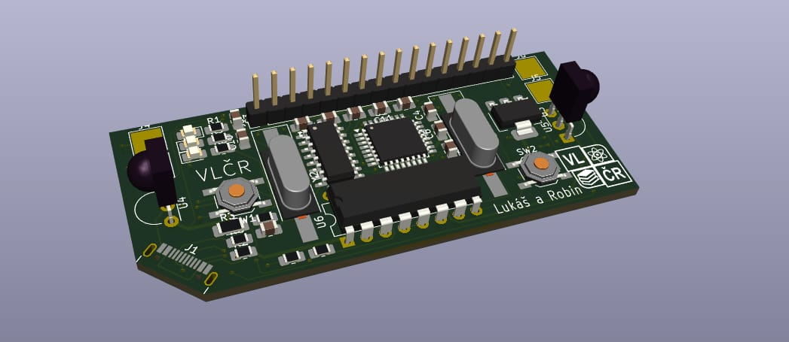
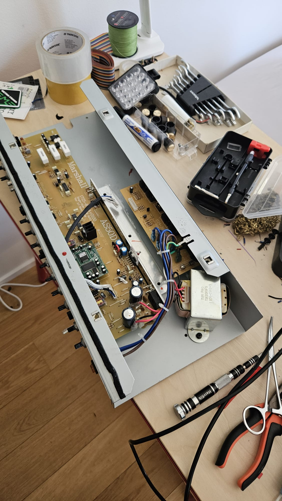
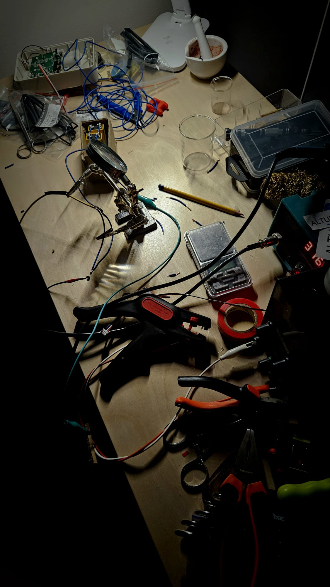
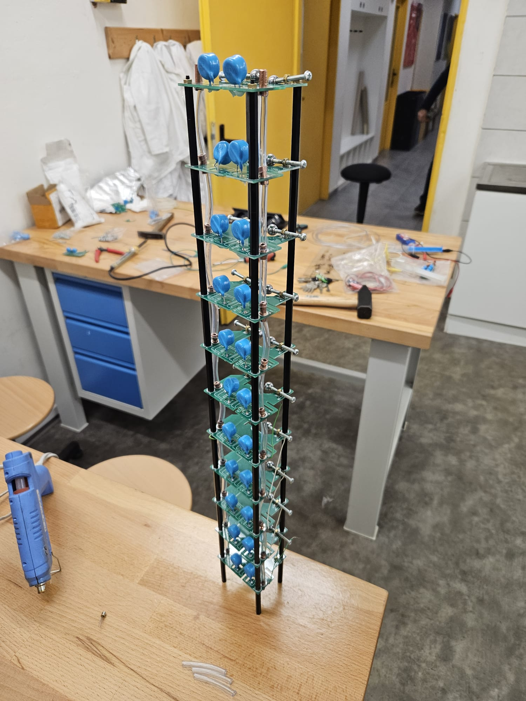
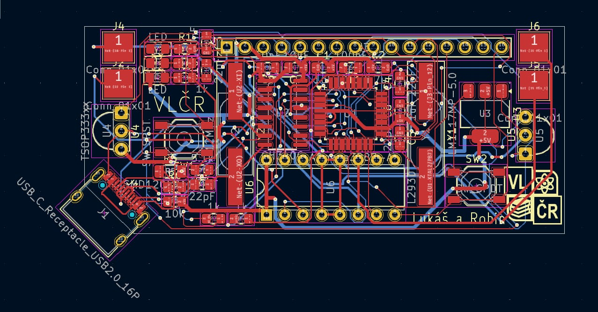
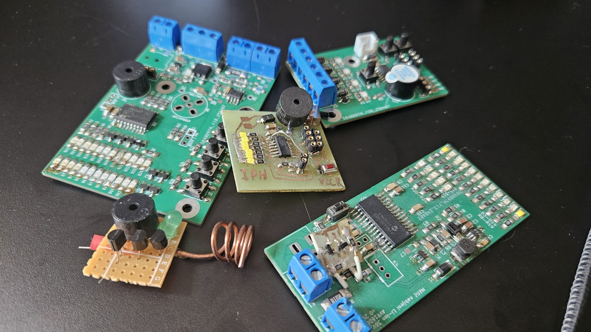
Jaderná energetika & Věda
Což se týče jaderné energetiky, ta mě fascinuje už dlouhou dobu. Považuji ji za jeden z nejdůležitějších pilířů naší budoucnosti – čistý, stabilní a technologicky pokročilý zdroj. Pro mě je to obor, kterému se aktivně věnuji ve svém volném čase.
Nutno dodat, že když jsem před psaním své závěrečné práce dal na LinkedIn žádost o inspiraci, dost mě překvapil ten obrovský počet reakcí a podpory od lidí z praxe. Svůj hlubší zájem jsem pak uceleně shrnul v rozsáhlé práci na ZŠ Pod Marjánkou pod vedením RNDr. Pavla Červinky (můj skvělý učitel fyziky ze základní školy). Práce s názvem „Jaderná energetika a její budoucnost“ přinesla 24 stránek analýzy, ale především mě posunula v tom, jak přistupovat k odborným tématům a konzultovat s experty. Abychom s kamarádem Hugem Albrechtem (měl práci na Malé modulární jaderné reaktory) posunuli obhajobu ještě dál, navrhli a vytiskli jsme na 3D tiskárně detailní model reaktorového ostrova malého modulárního reaktoru (RR SMR).
Abych byl v kontaktu s nejnovějšími trendy, účastním se odborných akcí. Klíčovou zkušeností pro mě byla účast na 11. ročníku konference SMR na FJFI ČVUT v Praze, kam mě pozval Josef Kaňkovský. Poslouchat přednášky o vývoji malých reaktorů přímo od zástupců firem jako ČEZ, ÚJV Řež nebo Rolls-Royce SMR byla obrovská motivace pro moje další studium i budoucí kariéru. Také jsem měl tu možnost navštívit SMR Camp, opět díky Pepovi Kaňkovskému, kde jsem se setkal s dalšími nadšenci a odborníky z oboru. Tyto zkušenosti mě utvrdily v mém rozhodnutí věnovat se jaderné energetice a přispět k jejímu rozvoji.
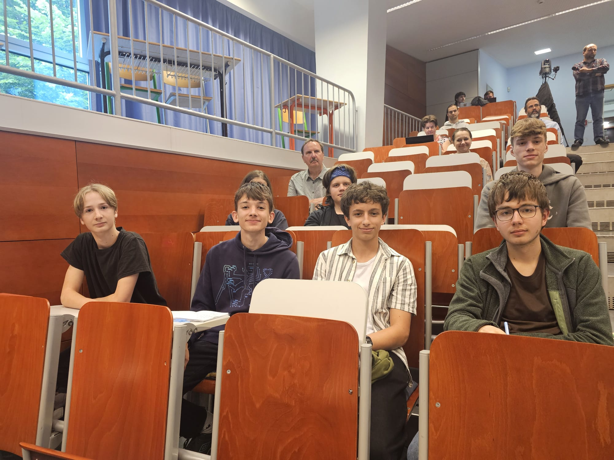
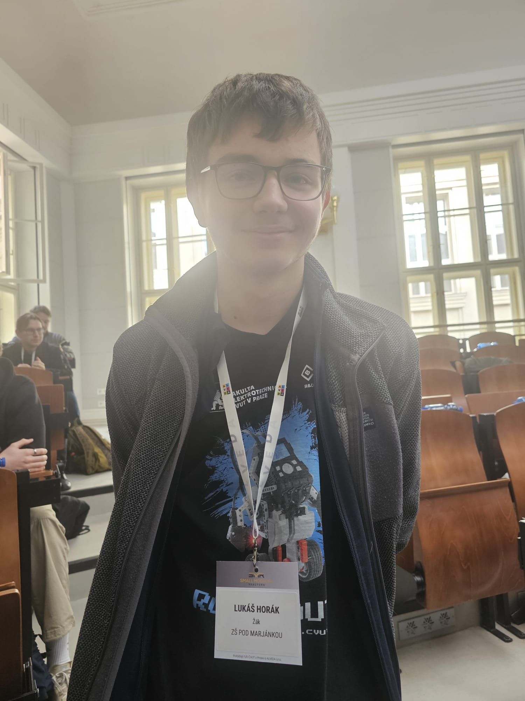
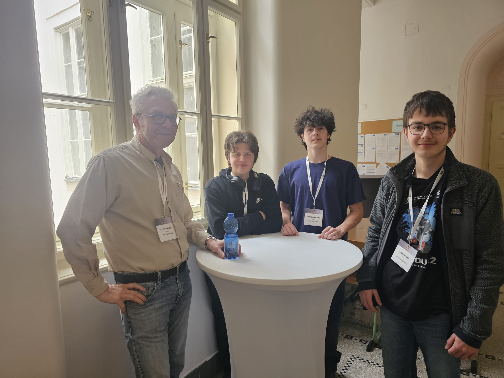
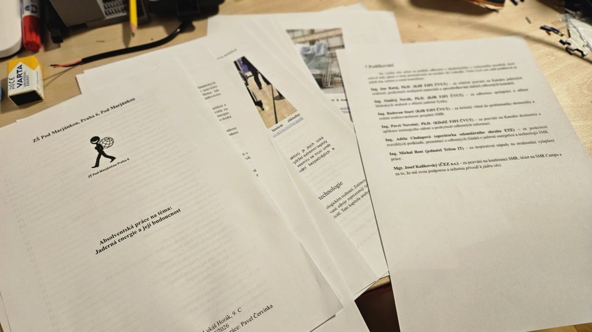
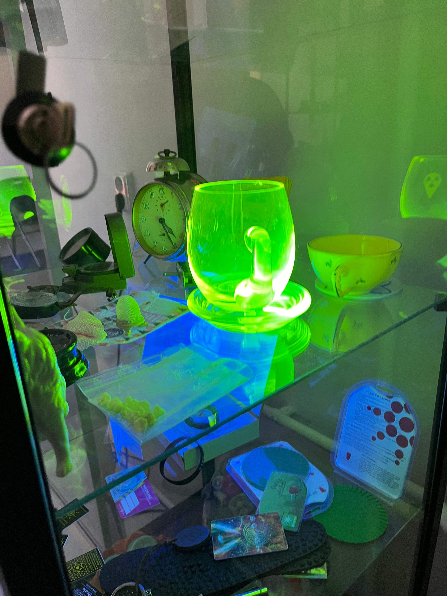
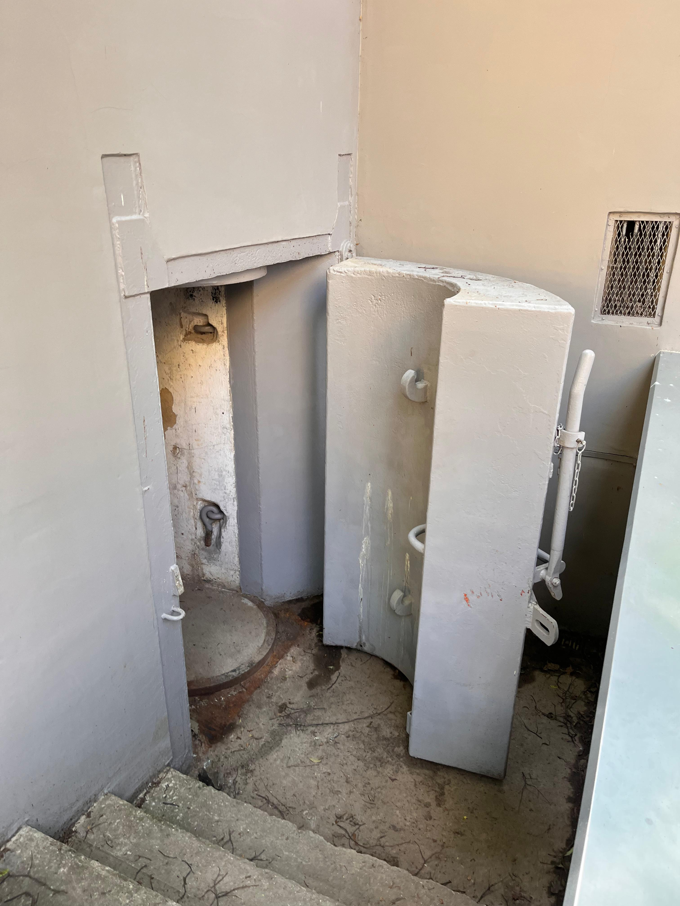
- E-mail: l.horak.vlcr@gmail.com
- Telefon: +420 732 120 118
- LinkedIn: Lukáš Horák na LinkedInu
- Iniciativa VLČR: www.vzdelanylid.cz